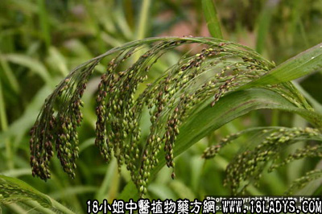

(本文解释权归中药材天地网兄弟站-18小姐中医植物药方网所有,如需转载请注明出处)
水蓢根(中药材植物名:水生黍)(植物科目:禾本科)

别名：生芦根、郎笛蔃。
植物名：水生黍。
生长环境：本品为多年生草木。生于静水沼泽中或水池湿地上。
分布：我国、印度、马来西亚，广州附近遍布。
入药部分：根。
采集期：全年。
自采地点：涌边。
性味：性寒凉、味甘淡。
功能：清心肝热、利水。
主治、用量和用法：①外感发热、配伍用；②癍痧热症：生用1至2两，清水煎服；③肝肺突热；④咽痛，均用法同上；
⑤牛发癍痧大热；生用10两至20两，清水煎服。
（方歌）水蓢根治癍痧症，肺热咽痛亦难胜，更疗水牛发癍痧，廿两煎服立即应。
(本文解释权归中药材天地网兄弟站-18小姐中医植物药方网所有,如需转载请注明出处)